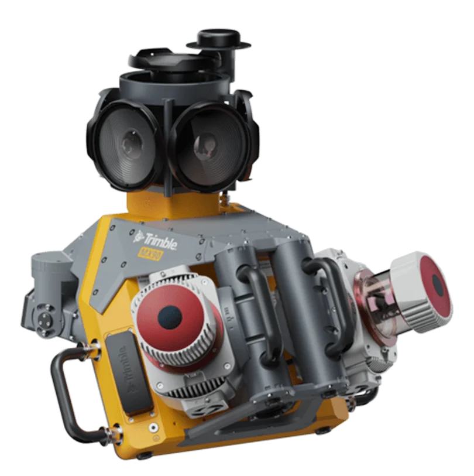
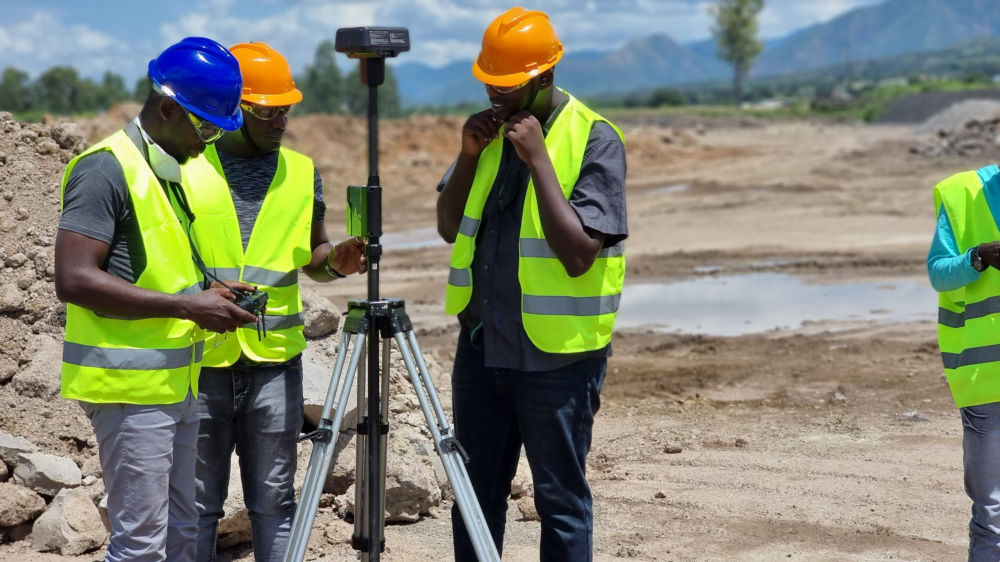
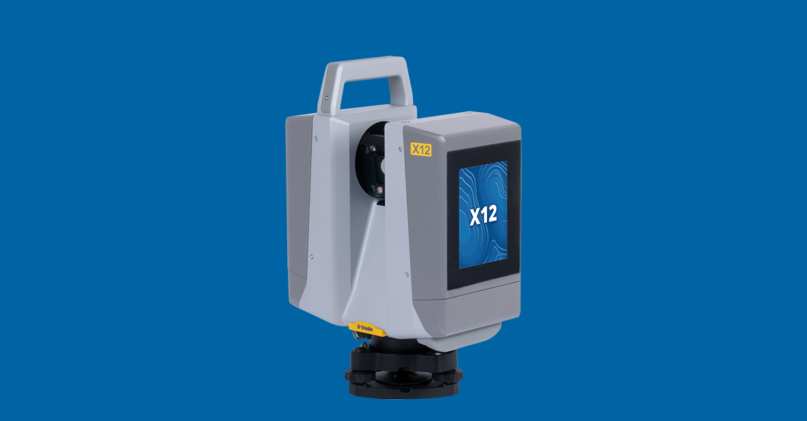
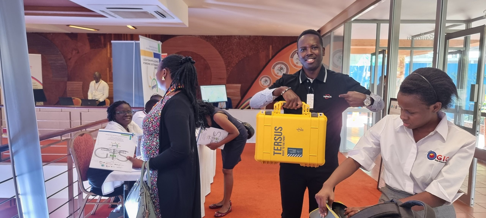

New hardware
Trimble ST30 smart target
A smart target for fast, confident performance on any jobsite: measure and move faster while boosting accuracy and minimizing errors.
Learn more TrimbleGNSS · Total Stations · Scanning
TrimbleGNSS · Total Stations · Scanning DJI EnterpriseDrones · LiDAR · Dock
DJI EnterpriseDrones · LiDAR · Dock Esri ArcGISGIS & SDI
Esri ArcGISGIS & SDI Spectra GeospatialGNSS & Robotic Stations
Spectra GeospatialGNSS & Robotic Stations Nikon PrecisionOptical Survey
Nikon PrecisionOptical Survey US RadarGround Penetrating Radar
US RadarGround Penetrating Radar Seafloor SystemsHydrographic Survey
Seafloor SystemsHydrographic Survey IBM Tape StorageEnterprise Data Archive
IBM Tape StorageEnterprise Data Archive XGRIDSHandheld SLAM LiDAR
XGRIDSHandheld SLAM LiDAR




A smart target for fast, confident performance on any jobsite: measure and move faster while boosting accuracy and minimizing errors.
Learn moreOfficial films from Trimble Geospatial.
Trimble Geospatial solutions for the sectors we serve.

Capture and deliver topographic, cadastral and engineering survey data with confidence.
Learn more
Control, stake out and verify roads, rail and bridges from design to as-built.
Learn more
Measure stockpiles, pits and haul roads accurately and safely.
Learn more
Map and manage networks, corridors and assets across wide areas.
Learn moreSurvey and positioning hardware and software, supplied and supported by KACO Systems.
Integrated GNSS for everyday work and extreme conditions
Peak accuracy in remote locations
Ultra-rugged integrated GNSS
Everyday integrated GNSS

Built for any real-time network
Robotic, Autolock and mechanical total stations
Top-tier field technologies
Reality capture from tripod to vehicle
Reality capture made simple

High-end scanning for demanding projects
Leading-edge mobile mapping
Field and office software for the whole workflow
Field-to-finish survey CAD

Hands-on, instructor-led courses for field crews and office teams, delivered in Kampala.
Learn more
Our Kampala lab services, calibrates and supports your instruments so they stay survey-ready.
Learn moreManuals, downloads and technical help for Trimble Geospatial products.
Learn moreDownload a trial of Trimble Business Center and try it on your own survey data.
Learn moreBuying the instrument is the easy part. Our Kampala calibration lab, HelpDesk, and Training Academy keep Trimble systems accurate and productive for their entire working life.
Our facility is equipped with optical collimators and EDM baseline test benches to service and calibrate Trimble total stations, GNSS rovers, and levels.
Dedicated telephone, WhatsApp, and remote desktop support for field crews troubleshooting coordinate systems, controller firmware, or Trimble Access workflows in real time.
Structured, blended learning combining classroom theory with hands-on field practicals to turn your staff into certified Trimble GNSS and total station operators.
Our application engineers review your project specifications and recommend the right Trimble hardware/software combination, with an on-site demonstration where useful.